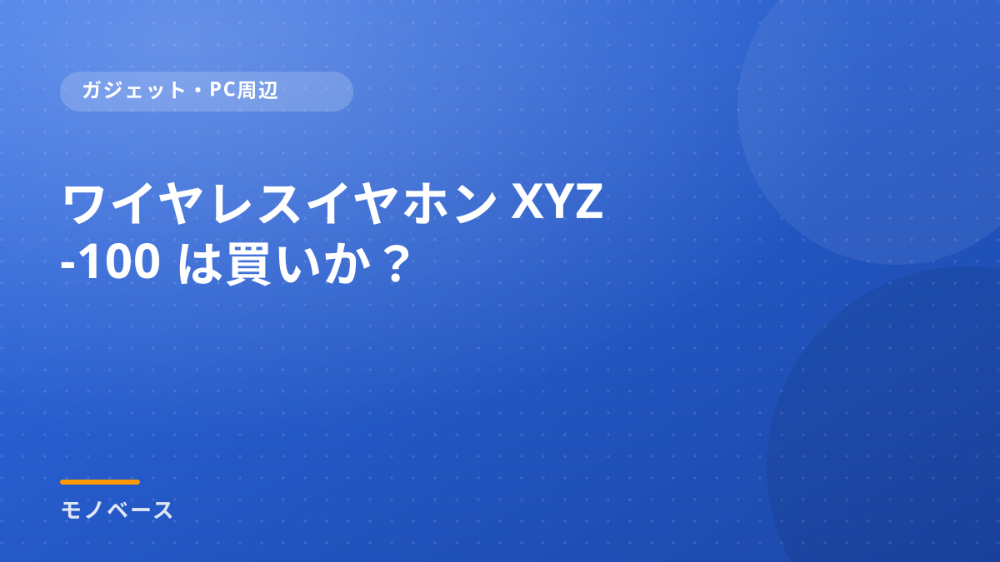

使ってみて分かったことを、そのまま書く。
良い点だけでなく、合わない場面や不満点まで含めて記録しています。
ガジェット・デスク環境・生活家電・日用品を中心に 5 記事。
注目の記事
新着記事
カテゴリー
当サイトについて
掲載しているスペック・価格は執筆時点のものです。最新の情報は販売ページでご確認ください。
Amazonのアソシエイトとして、当サイトは適格販売により収入を得ています。
お知らせ 当サイトの記事には広告（Amazonアソシエイト等）を含みます。掲載価格・在庫は執筆時点のもので、最新情報は販売ページをご確認ください。
良い点だけでなく、合わない場面や不満点まで含めて記録しています。
ガジェット・デスク環境・生活家電・日用品を中心に 5 記事。
掲載しているスペック・価格は執筆時点のものです。最新の情報は販売ページでご確認ください。
Amazonのアソシエイトとして、当サイトは適格販売により収入を得ています。